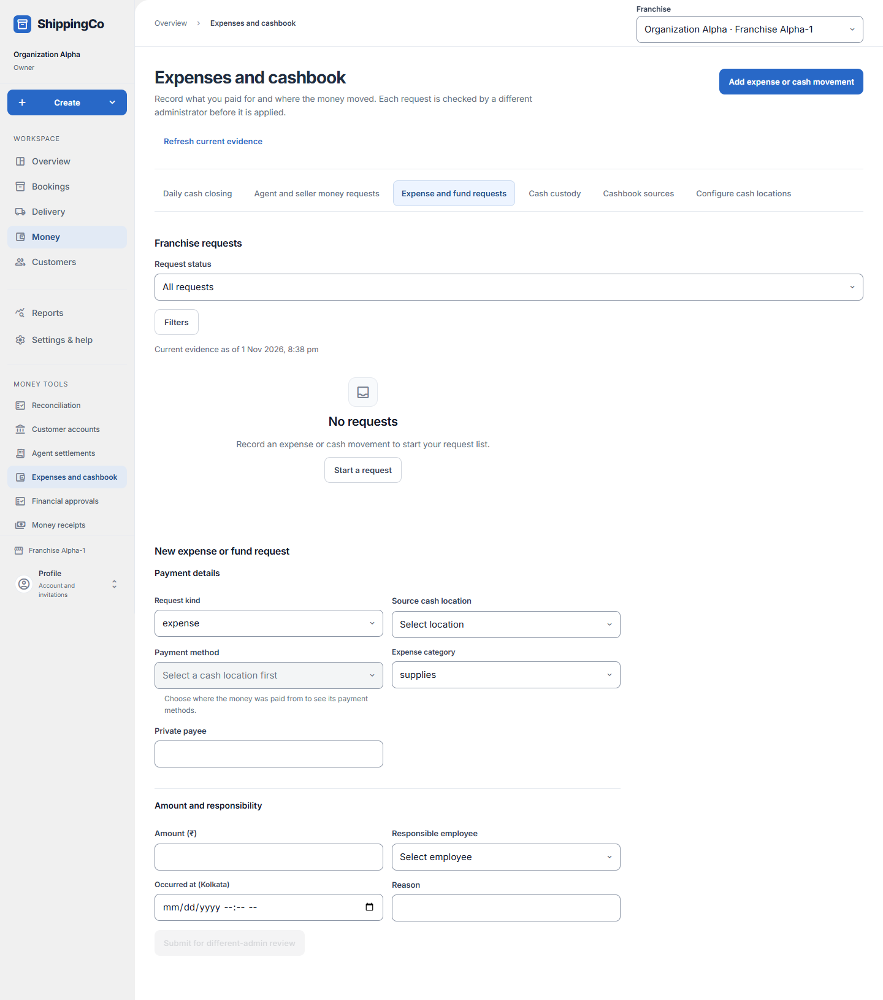
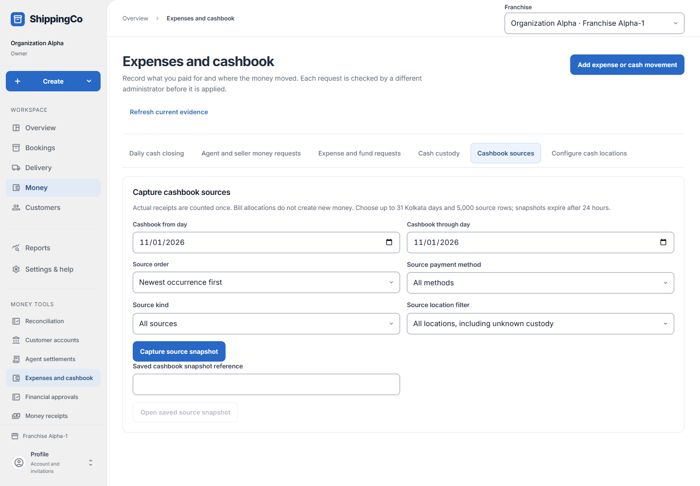

Expenses and fund requests
What this helps you do
- Prepare expenses and fund requests for independent review, then inspect recorded cashbook sources.
Open this feature
- Money > Expenses and cashbook > Expense and fund requests.
- Check the active branch first. Available actions depend on your role and the selected record.


Prepare expense or fund request
- Select Add expense or cash movement or Start a request. Choose Request kind first because the required fields change with the kind.
- Select Source cash location and, for a transfer, Target cash location. Choose a method allowed by the source account. For an expense choose Expense category and Private payee.
- Enter amount in rupees, Responsible employee, actual Occurred at time in Kolkata and Reason. Submit for different-admin review. A submitted request is not yet an applied expense.
- Open the saved request to inspect evidence and status. Add supporting proof where offered and check it saved.
Review or correct
- A different authorised administrator reviews the request and supplies Review decision and Review reason. The requester cannot approve their own request. Check the resulting saved status.
- Use a linked correction for a wrong applied record. Replacement recorded amount means the corrected total, not the difference; zero annuls the recorded amount while retaining history.
- For fee corrections distinguish earned expense, previous payment, replacement direct payment and advance applied. Seller payment corrections retain their original COD allocation and require the private payment reference.
Filters and cashbook sources
- Request status filters the list. Expand Filters for kind, expense category, method, source, responsible employee and occurrence times. The before time is exclusive.
- Open Cashbook sources. Enter from and through day, optionally choose source order, method, kind and location, then Capture source snapshot.
- Use Saved cashbook snapshot reference to reopen a known capture. Inspect its saved sources and use export where permitted. Internal movements and allocations are not additional sales.
Fields and when to use them
These fields belong to the actions above. Complete the fields for your selected action; optional filters may stay blank.
- Request status: Choose the state or decision that matches the record you have reviewed. Use when shown for the selected action.
- Review decision: Choose the state or decision that matches the record you have reviewed. Use when shown for the selected action.
- Review reason: Explain why you are making this request or change. Use the real business reason. Required when this field is shown.
- Request kind: Select the request kind appropriate to the action explained above. Use when shown for the selected action.
- Source cash location: Select the source cash location involved in this action; check its account and responsible person. Use when shown for the selected action.
- Target cash location: Select the target cash location involved in this action; check its account and responsible person. Use when shown for the selected action.
- Private seller payment reference: Use the reference from the matching saved record or real supporting document. Do not invent one. Required when this field is shown.
- Payment method: Choose how the money was paid or checked. Use the option that actually applies. Use when shown for the selected action.
- Expense category: Choose rent, utilities, supplies, transport, maintenance or other. Use when shown for the selected action.
- Private payee: The actual person or supplier paid. Required when this field is shown.
- Replacement direct fee payment (₹): Enter the value in rupees, with at most two decimal places. Check the limit shown on screen. Required when this field is shown.
- Replacement advance applied (₹): Enter the value in rupees, with at most two decimal places. Check the limit shown on screen. Required when this field is shown.
- Responsible employee: Choose the actual person responsible from the available list. Use when shown for the selected action.
- Occurred at (Kolkata): Enter when the event really happened. Use the time zone named in the label. Required when this field is shown.
- Reason: Explain why you are making this request or change. Use the real business reason. Required when this field is shown.
- Filter request kind: Select the filter request kind appropriate to the action explained above. Use when shown for the selected action.
- Filter expense category: Select the filter expense category appropriate to the action explained above. Use when shown for the selected action.
- Filter expense method: Choose how the money was paid or checked. Use the option that actually applies. Use when shown for the selected action.
- Filter source location: Select the filter source location involved in this action; check its account and responsible person. Use when shown for the selected action.
- Employee: Choose the actual person responsible from the available list. Use when shown for the selected action.
- Filter responsible employee reference: Use the reference from the matching saved record or real supporting document. Do not invent one. Use when shown for the selected action.
- Filter occurred from (Kolkata): Enter when the event really happened. Use the time zone named in the label. Use when shown for the selected action.
- Filter occurred before (Kolkata; exclusive): Enter when the event really happened. Use the time zone named in the label. Use when shown for the selected action.
- Cashbook from day: Enter the cashbook from day for this action, using the time zone shown. Required when this field is shown.
- Cashbook through day: Enter the cashbook through day for this action, using the time zone shown. Required when this field is shown.
- Source order: The presentation order of captured source rows. Use when shown for the selected action.
- Source payment method: Choose how the money was paid or checked. Use the option that actually applies. Use when shown for the selected action.
- Source kind: Select the source kind appropriate to the action explained above. Use when shown for the selected action.
- Source location filter: Select the source location filter involved in this action; check its account and responsible person. Use when shown for the selected action.
- Saved cashbook snapshot reference: Use the reference from the matching saved record or real supporting document. Do not invent one. Use when shown for the selected action.
- Amount (₹) / Gross earned expense (₹) / Previous recorded payment (₹): The amount for the selected request. Check whether this is a new payment, an earned fee or an earlier recorded payment. As shown for the request kind
- Replacement recorded amount (₹; zero annuls): The corrected amount. Zero cancels the old recorded amount through a correction; it does not erase history. For a recording correction
If you need to retry
- No records: check branch, account or customer and filters. Use Load more where offered before deciding a record is missing.
- Invalid or missing value: read the form message, correct the draft, then review amounts and references again.
- Uncertain save: use the offered retry for the same request. Do not create a second payment, return, expense or application to guess whether the first saved.
- Changed evidence or policy: refresh current records and review them before a new request. A saved report retains its captured figures; create another report for current results.
About this guide
Checked against the current screen code on 1 November 2026. This explains app behaviour, not tax or accounting advice. Buttons and records can differ by role.